Avant, pendant, après : mesurez enfin l'impact de vos formations
Webinaire gratuit de 45 min : diffusez un diagnostic comportemental avant, pendant et après vos formations pour prouver leur impact.
Je m'inscris →
Une bibliothèque de contenus pensée pour les DRH, responsables formation, directions QVCT, RSE, cybersécurité, conformité et cabinets de conseil qui veulent passer des intentions aux pratiques observables.
Utilisez les tags comme un menu éditorial : vous pouvez filtrer par grand sujet, par format ou rechercher directement un mot-clé.
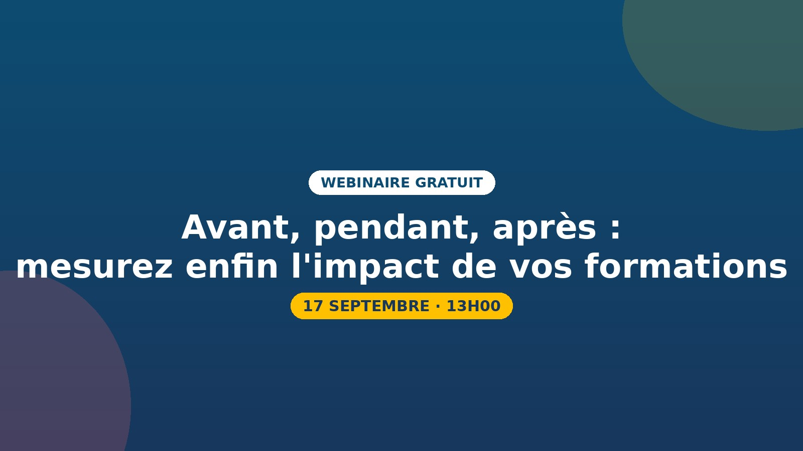
Webinaire gratuit de 45 min : diffusez un diagnostic comportemental avant, pendant et après vos formations pour prouver leur impact.
Je m'inscris →Prévenir les demandes urgentes, faux RIB et ordres de virement suspects avec des réflexes de vérification simples.
Lire le guide →
Installer les bons réflexes face aux emails, SMS, liens et pièces jointes suspects sans culpabiliser les collaborateurs.
Lire le guide →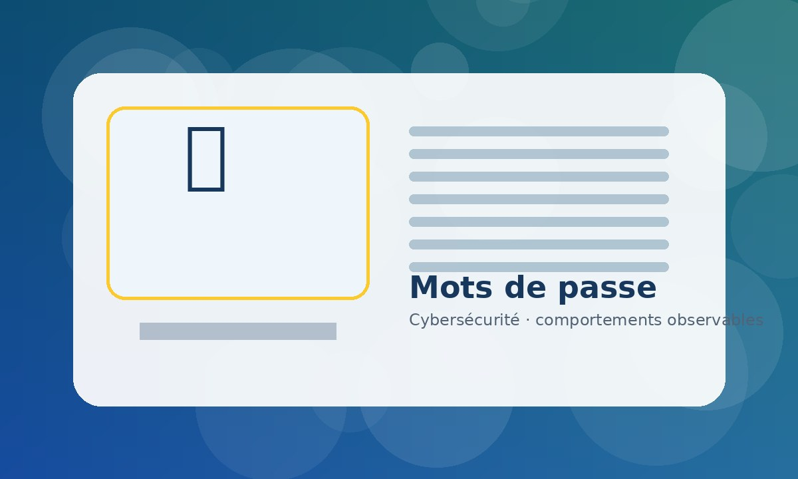
Réduire les risques liés au partage d’accès, aux mots de passe réutilisés et aux validations trop rapides.
Lire le guide →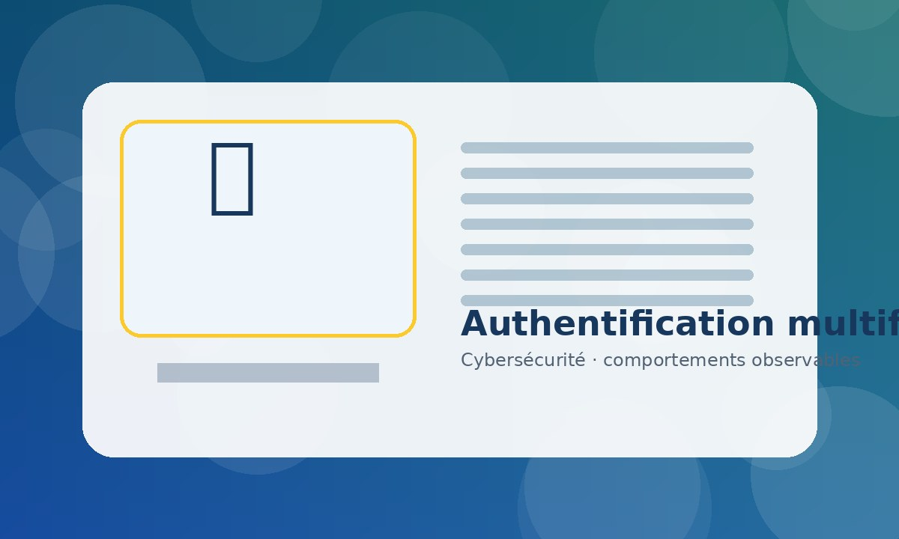
Comprendre les risques de fatigue MFA et apprendre à vérifier une demande de validation inhabituelle.
Lire le guide →Comprendre ce que recouvre la RSE, ses objectifs, ses enjeux opérationnels et la façon de passer des engagements aux comportements observables.
Lire le guide →Décryptage des trois piliers de la RSE et de leur traduction concrète dans les pratiques quotidiennes des organisations.
Lire le guide →Les bénéfices d’une démarche RSE pour l’entreprise, les collaborateurs, les clients et les parties prenantes, au-delà de la communication.
Lire le guide →Comment construire une stratégie RSE alignée avec les enjeux métier, les parties prenantes et les comportements attendus.
Lire le guide →
Une politique RSE formalise les engagements, les priorités et les règles de décision qui orientent les pratiques de l’entreprise.
Lire le guide →
Comment transformer les ambitions RSE en étapes, responsabilités, jalons et pratiques mesurables dans le temps.
Lire le guide →Méthode pour bâtir un plan d’action RSE qui évite les intentions générales et cible les comportements à faire évoluer.
Lire le guide →La gouvernance RSE organise les responsabilités, les arbitrages et les indicateurs pour éviter une démarche isolée ou purement déclarative.
Lire le guide →La culture RSE se voit dans les arbitrages, les habitudes, les décisions et les comportements quotidiens des équipes.
Lire le guide →Pourquoi l’engagement RSE ne se décrète pas et comment créer des situations qui donnent envie d’agir concrètement.
Lire le guide →Méthodes pour observer, qualifier et suivre les comportements RSE au travail sans se limiter aux déclarations d’intention.
Lire le guide →Un diagnostic comportemental RSE expose les collaborateurs à des situations concrètes pour comprendre les réflexes, arbitrages et leviers d’action.
Lire le guide →Quels indicateurs suivre pour piloter une démarche RSE : résultats, moyens, comportements, signaux faibles et évolution dans le temps.
Lire le guide →Comprendre les enjeux, les erreurs fréquentes et les pratiques concrètes qui permettent d’ancrer durablement un changement.
Lire le guide →
Accompagner les équipes, soutenir les managers et transformer les intentions en pratiques concrètes.
Lire le guide →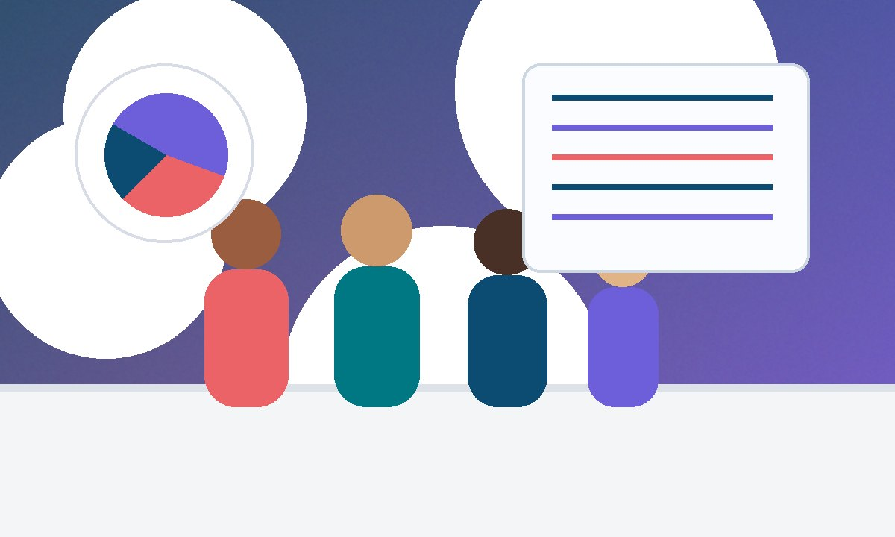
Faire évoluer la culture managériale, la délégation, le feedback et la responsabilisation.
Lire le guide →Objectifs, programme, compétences et mesure d’impact d’une formation au change management.
Lire le guide →Former les managers aux pratiques qui changent le quotidien : feedback, priorisation, conflits, délégation.
Lire le guide →
Développer un leadership visible dans les comportements, les décisions et les arbitrages.
Lire le guide →Comprendre, prévenir et traiter les tensions professionnelles sans aggraver les situations.
Lire le guide →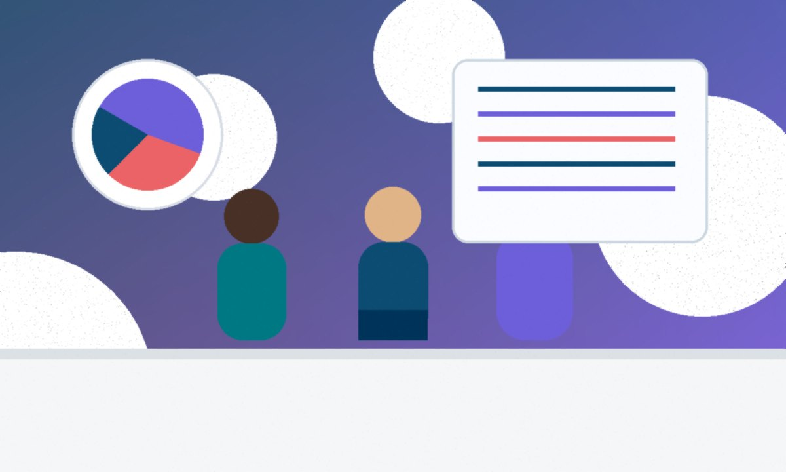
Objectifs, programme, mises en situation et prévention des conflits en entreprise.
Lire le guide →Méthode concrète pour intervenir tôt, nommer les faits et restaurer un cadre de coopération.
Lire le guide →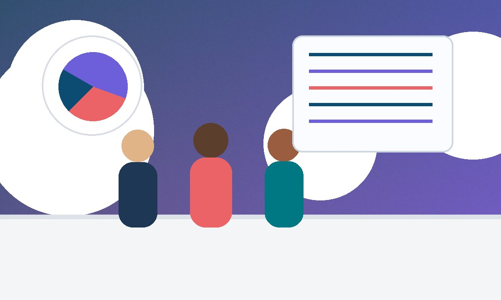
Définition, objectifs, usages et limites pour comprendre ce que mesure réellement ce format.
Lire l’article →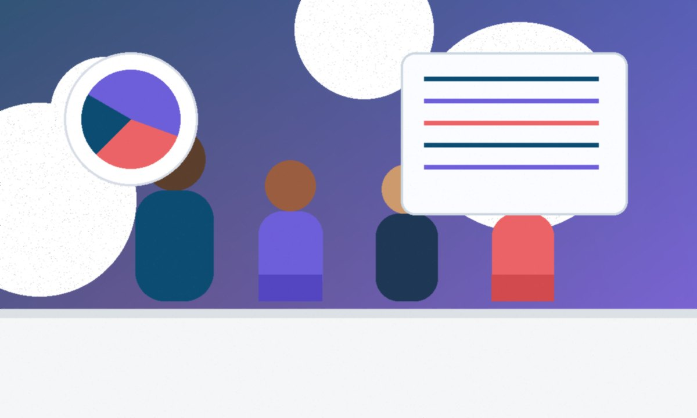
Comprendre les différences essentielles entre opinion déclarée, connaissance théorique et choix face à une situation.
Lire l’article →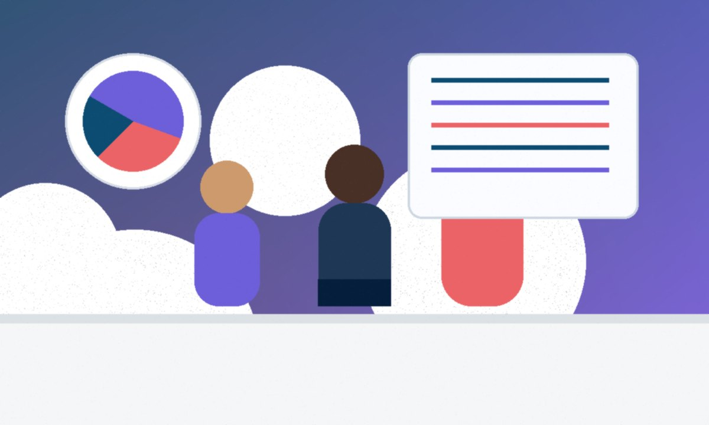
Les principes clés pour évaluer ce qui se fait vraiment sur le terrain, au-delà des acquis théoriques.
Lire l’article →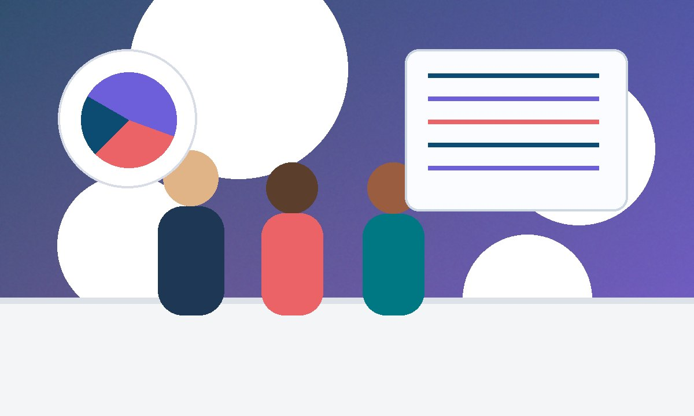
Sensibiliser, réaliser un état des lieux, préparer une action et suivre l’évolution des pratiques.
Lire l’article →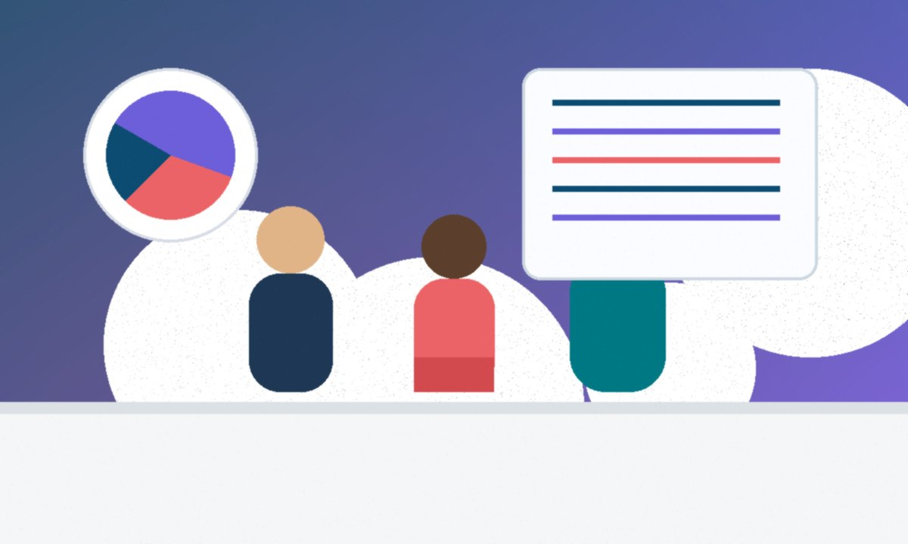
Préparer les contenus, activer la réflexion et mesurer ce qui évolue réellement après l’action.
Lire l’article →Phishing, mots de passe, télétravail, signalement et réflexes face aux risques numériques.
Lire l’article →Exemples de situations : fraude au dirigeant, lien suspect, support IT, urgence et vérification.
Lire l’article →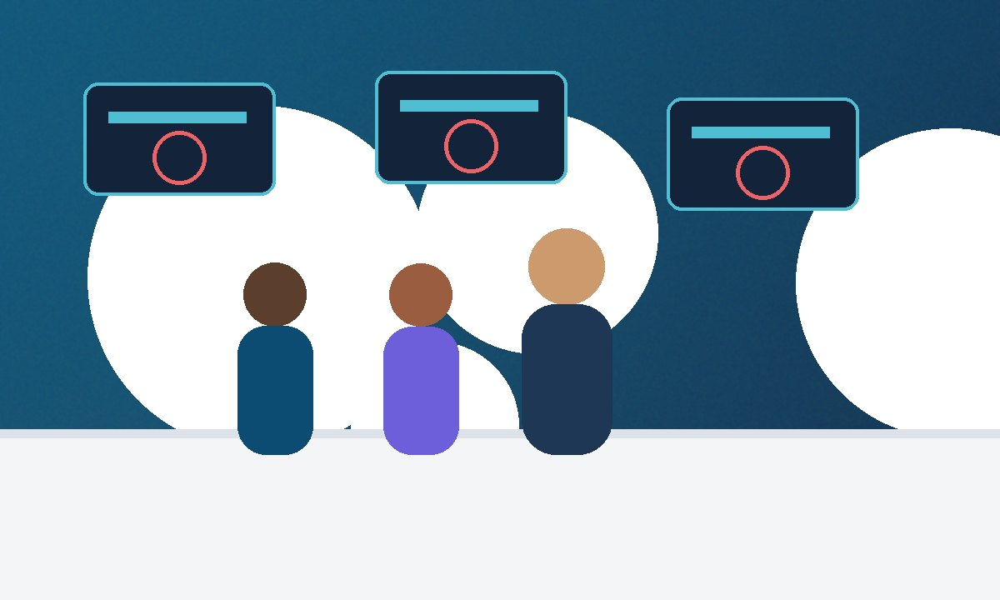
Les limites des approches trop théoriques et les leviers pour faire évoluer les réflexes en situation.
Lire l’article →Usages numériques non autorisés, outils contournés, arbitrages terrain et comportements cyber à risque.
Lire le guide →Sécuriser les pratiques hybrides : connexions, documents, équipements, signalement et vigilance quotidienne.
Lire le guide →Comprendre les risques liés à l’usage de l’IA : données sensibles, prompts, vérification et shadow AI.
Lire le guide →Ce qui compte dans les premières minutes : alerter, isoler, documenter, éviter l’improvisation.
Lire le guide →Lever les freins au signalement et installer une culture où l’alerte rapide protège l’organisation.
Lire le guide →Identifier les habitudes numériques qui exposent l’entreprise : urgence, contournement, partage et négligence.
Lire le guide →Concevoir une formation cyber utile, concrète et mesurable, centrée sur les situations de travail.
Lire le guide →Construire une campagne cyber utile : situations concrètes, formation, phishing, signalement et mesure des comportements.
Lire le guide →Comprendre pourquoi les incidents cyber naissent souvent dans les usages quotidiens, sans accuser les collaborateurs.
Lire le guide →Les leviers concrets pour faire de la cybersécurité une pratique collective, pas seulement une règle IT.
Lire le guide →Indicateurs, limites des questionnaires et méthodes pour objectiver les réflexes cyber collectifs.
Lire le guide →
Les bons critères pour évaluer une campagne cyber : au-delà du taux de participation et du quiz final.
Lire le guide →Identifier les techniques de manipulation utilisées par les cybercriminels et adopter les réflexes de vérification et de signalement.
Lire le guide →Feedback, autonomie, priorisation, coopération, tensions et management hybride.
Lire l’article →Coopération, changement, responsabilisation, feedback, culture managériale et leadership.
Lire l’article →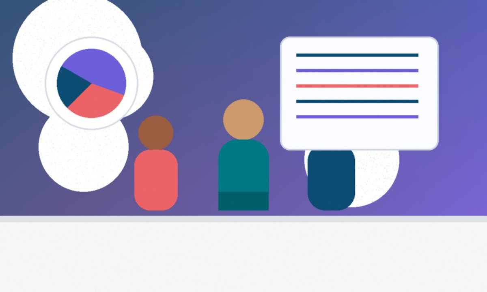
Pourquoi le feedback ne suffit pas s’il ne s’ancre pas dans des situations observables.
Lire l’article →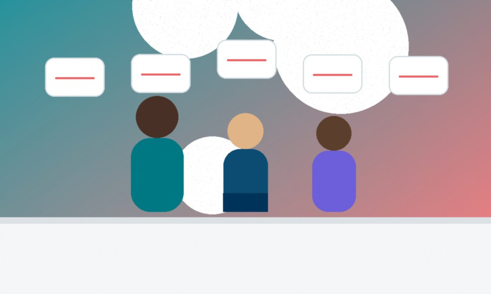
Charge, coopération, isolement, sécurité psychologique et tensions dans le travail.
Lire l’article →Repérer les signaux faibles, réguler la charge et intervenir sans psychologiser.
Lire l’article →
Identifier les arbitrages, les alertes tardives et les mécanismes collectifs qui aggravent la surcharge.
Lire l’article →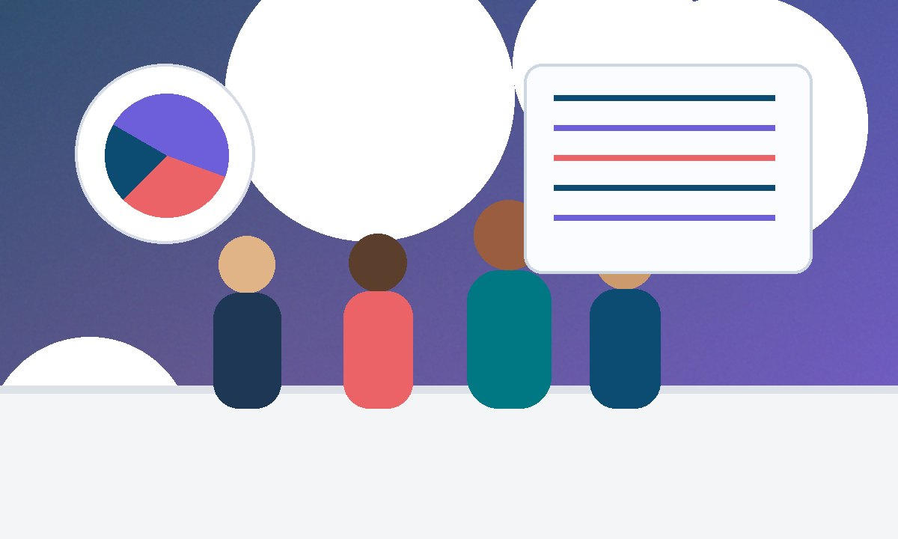
Repérer les signaux faibles, comprendre les mécanismes collectifs et agir avant que les situations ne se dégradent.
Lire le guide →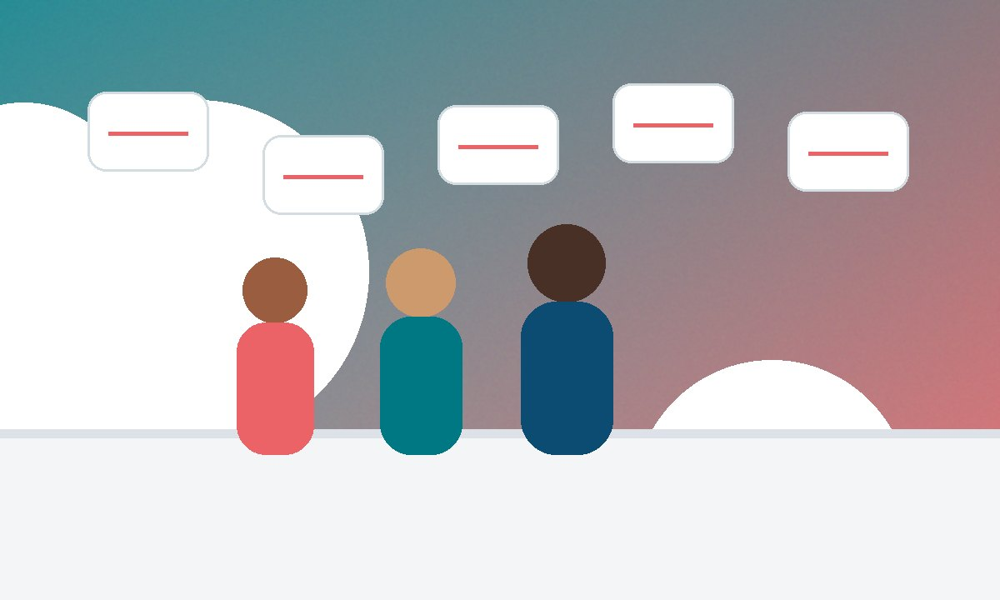
Comprendre la QVCT comme une démarche centrée sur le travail réel, la coopération et les conditions d’action.
Lire le guide →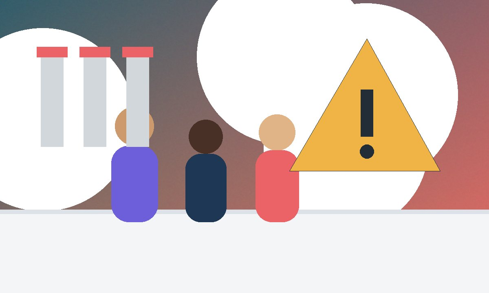
Créer un climat où les équipes peuvent signaler, questionner et apprendre sans crainte.
Lire le guide →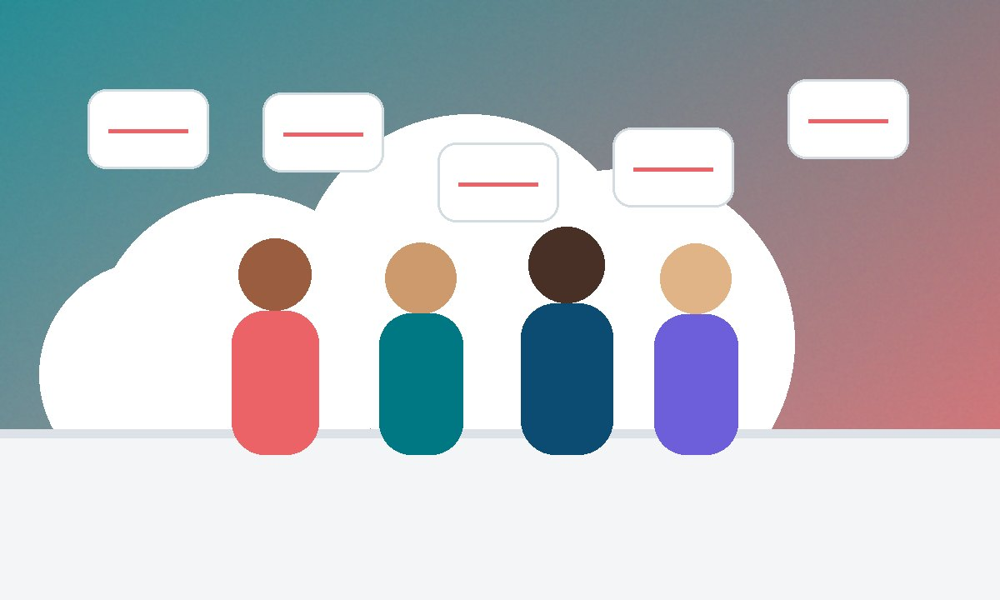
Clarifier ce que les managers peuvent faire, ce qu’ils doivent observer et quand orienter.
Lire le guide →Identifier ce qui pèse réellement : anticipation, interruptions, priorités floues et coordination invisible.
Lire le guide →
Construire une mesure QVCT qui débouche sur des décisions concrètes, pas seulement sur des scores.
Lire le guide →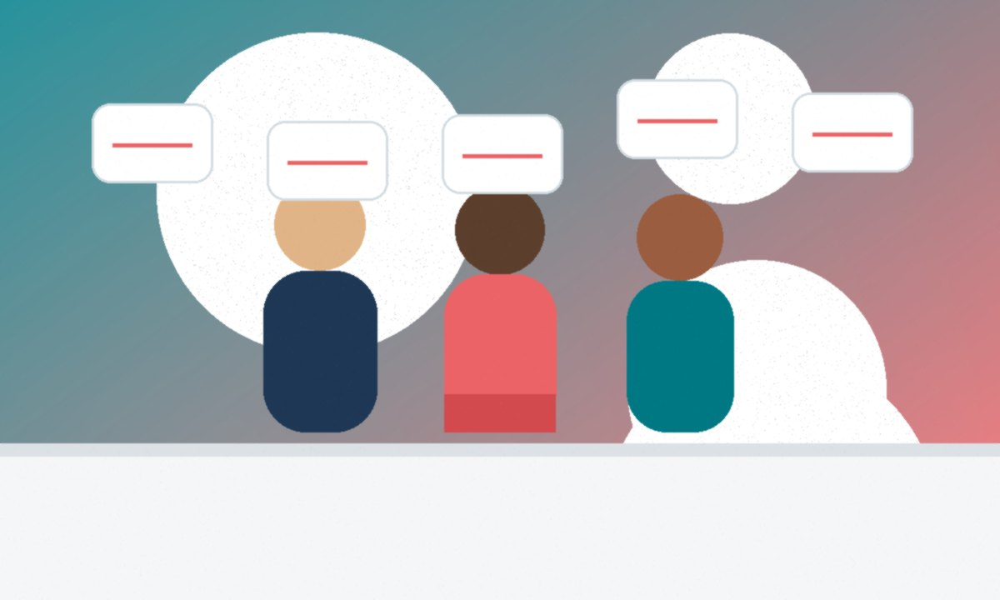
Repérer les comportements d’alerte, la surcharge durable et les pratiques de régulation avant l’épuisement.
Lire le guide →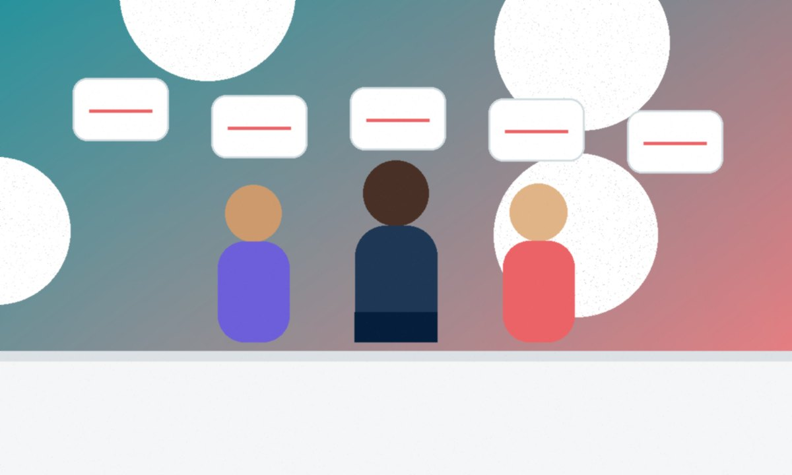
Comprendre la sous-charge, l’ennui professionnel et les signaux de retrait souvent invisibles.
Lire le guide →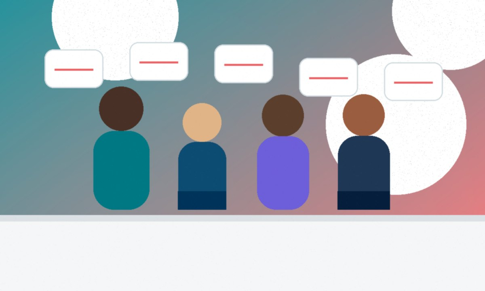
Identifier les incohérences organisationnelles, le désengagement et les comportements de retrait.
Lire le guide →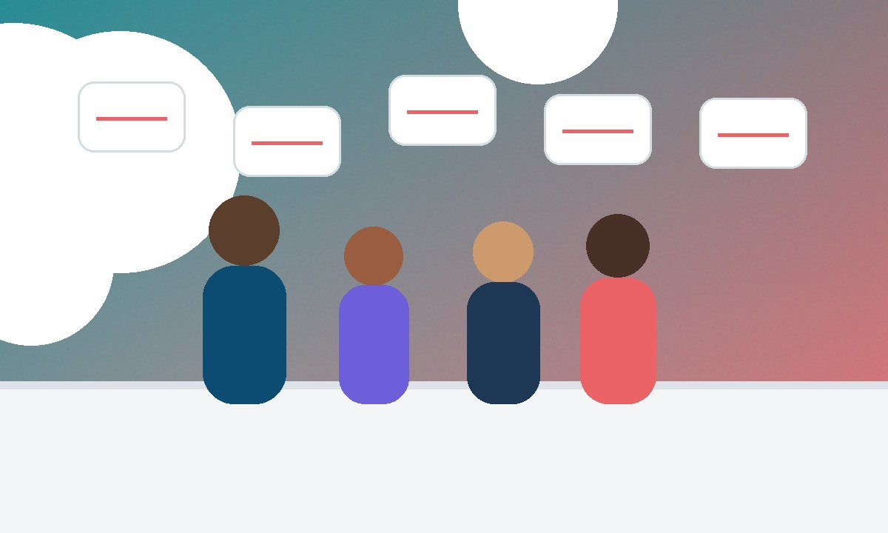
Distinguer stress ponctuel et stress chronique, repérer les signaux faibles et agir sur les situations de travail.
Lire le guide →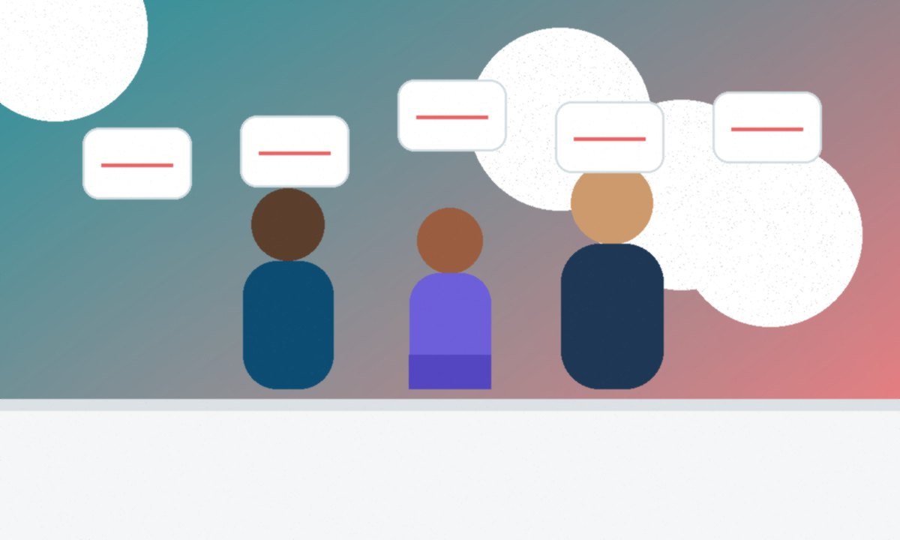
Repérer la fatigue durable, protéger la récupération et agir sur les routines qui épuisent les équipes.
Lire le guide →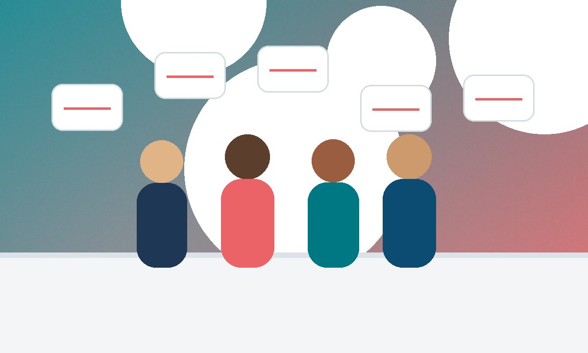
Comprendre les normes de disponibilité permanente et mesurer les comportements numériques à risque.
Lire le guide →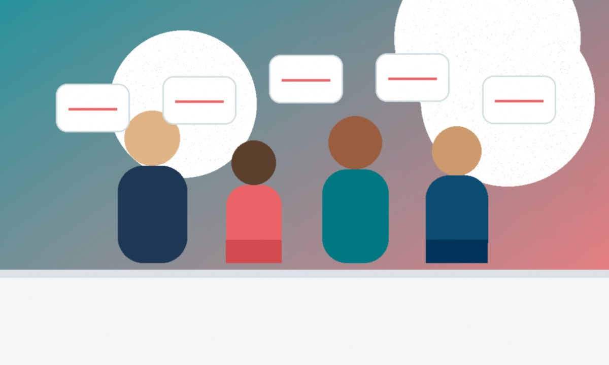
Transformer un principe juridique en règles concrètes, comportements managériaux et usages numériques mesurables.
Lire le guide →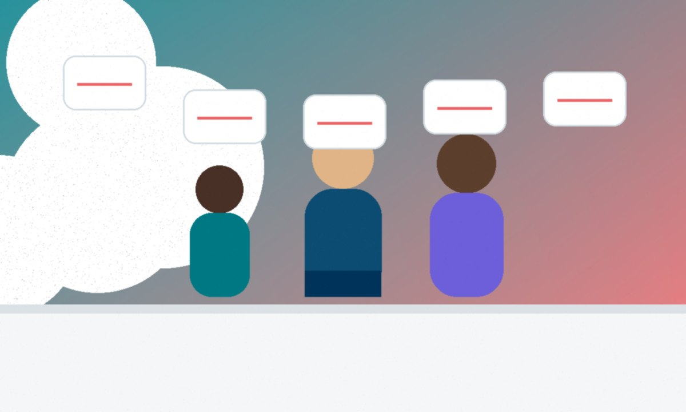
Observer les signaux de retrait, comprendre les causes organisationnelles et réactiver l’engagement par le travail réel.
Lire le guide →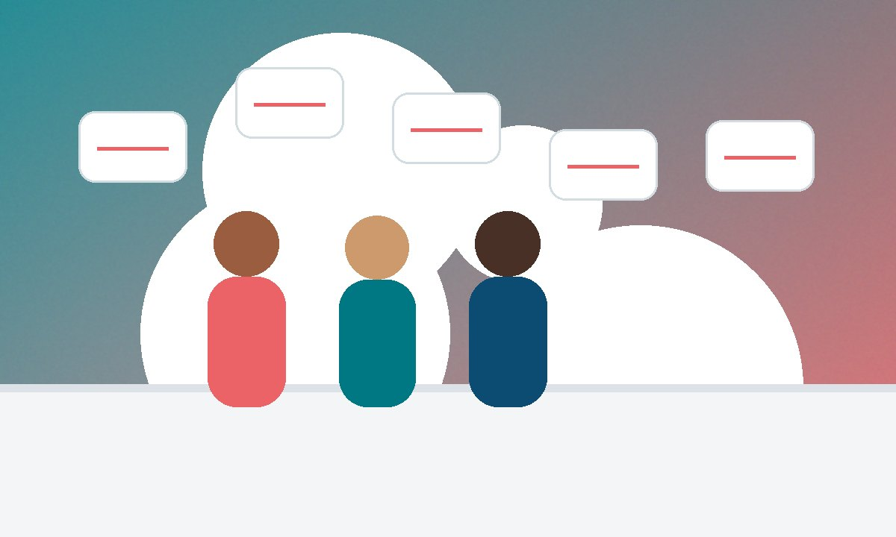
Lire ensemble les absences visibles et la présence empêchée pour mieux prévenir les risques QVCT et RPS.
Lire le guide →Comprendre comment transformer les engagements environnementaux en pratiques professionnelles concrètes, observables et mesurables.
Lire le guide →Réduire les usages numériques inutiles : équipements, données, réunions, stockage, IA et habitudes quotidiennes.
Lire le guide →Faire du numérique responsable un sujet concret pour les équipes : usages, outils, achats, cycle de vie et arbitrages métier.
Lire le guide →Identifier les écogestes utiles au bureau et les conditions qui permettent de les ancrer durablement.
Lire le guide →Agir sur les achats, les usages, les rituels collectifs et les habitudes de consommation au travail.
Lire le guide →Améliorer le tri grâce à des consignes simples, des dispositifs visibles et des comportements collectifs cohérents.
Lire le guide →Comprendre comment intégrer les critères RSE dans les arbitrages, les cahiers des charges et les décisions opérationnelles.
Lire le guide →Transformer les pratiques d’achat, d’usage, de maintenance, de réemploi et de fin de vie des équipements.
Lire le guide →Accompagner les nouveaux réflexes liés aux trajets, aux réunions, aux déplacements professionnels et à l’organisation du travail.
Lire le guide →Réduire l’impact des déplacements sans bloquer l’activité : critères de décision, alternatives et réflexes managériaux.
Lire le guide →Mobiliser les équipes autour des équipements, des routines et des décisions collectives de sobriété énergétique.
Lire le guide →Changer les habitudes liées aux impressions, validations, supports de réunion et rituels administratifs.
Lire le guide →
Relier la stratégie environnementale aux métiers, aux arbitrages et aux pratiques de travail observables.
Lire le guide →Comprendre les grands postes d’empreinte carbone et transformer les résultats en leviers d’action concrets.
Lire le guide →Utiliser le bilan carbone pour prioriser l’action et mobiliser les équipes autour des comportements à faire évoluer.
Lire le guide →Partir des situations réelles de travail pour aider chacun à identifier ses marges d’action concrètes.
Lire le guide →Sobriété, achats responsables, numérique responsable, déplacements et engagement collectif.
Lire l’article →Zones grises, cadeaux, conflits d’intérêts, alerte éthique et exemplarité managériale.
Lire l’article →Définition de l’éthique et de la compliance en entreprise : enjeux, risques, comportements observables et leviers pour développer une culture d’intégrité.
Lire le guide →Comment développer une culture éthique en entreprise : exemplarité, règles claires, signalement, dilemmes professionnels et mesure des comportements.
Lire le guide →Définition des conflits d’intérêts, exemples professionnels, comportements à adopter et méthodes de prévention en entreprise.
Lire le guide →Cadeaux fournisseurs, invitations, avantages : comprendre les risques compliance et aider les collaborateurs à adopter les bons comportements.
Lire le guide →Comment favoriser l’alerte éthique en entreprise : confiance, protection, circuits de signalement, rôle des managers et comportements observables.
Lire le guide →La charte éthique définit les principes d’intégrité, mais son efficacité dépend de sa traduction en situations concrètes et en comportements attendus.
Lire le guide →Prévenir la corruption en entreprise : risques, situations sensibles, cadeaux, intermédiaires, pression commerciale et comportements à renforcer.
Lire le guide →Comprendre le devoir de vigilance, ses enjeux opérationnels et les comportements à développer avec les équipes, fournisseurs et parties prenantes.
Lire le guide →Le RGPD ne dépend pas seulement des outils juridiques ou IT. Il repose aussi sur les comportements : partage, conservation, minimisation et vigilance.
Lire le guide →Une formation éthique et compliance efficace s’appuie sur des situations concrètes, des dilemmes professionnels et des comportements observables.
Lire le guide →Comment mesurer une culture d’intégrité : indicateurs, signaux faibles, comportements observables, diagnostics anonymes et pilotage collectif.
Lire le guide →Créer un diagnostic comportemental éthique pour mesurer les pratiques collectives sur les conflits d’intérêts, cadeaux, alertes et décisions sensibles.
Lire le guide →Comment structurer une gouvernance éthique et compliance : rôles, comités, reporting, exemplarité managériale et pilotage des comportements.
Lire le guide →Prévenir les risques liés aux tiers et fournisseurs : due diligence, cadeaux, conflits d’intérêts, vigilance, signalement et comportements commerciaux.
Lire le guide →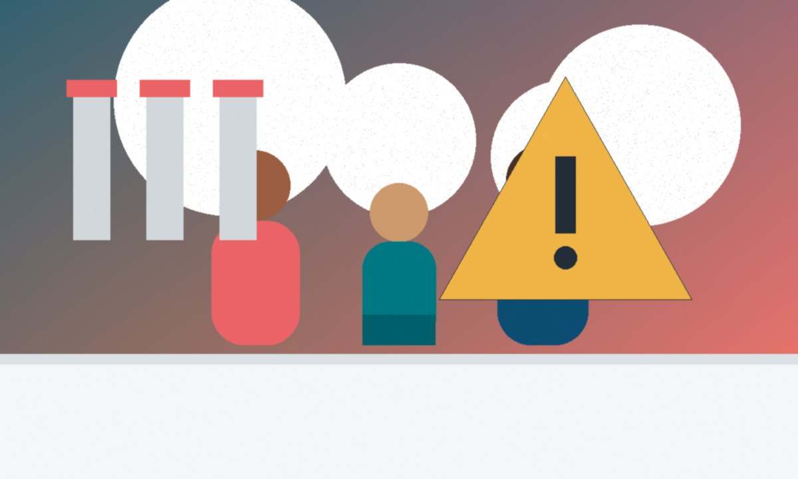
Comprendre comment passer des procédures aux comportements observables, aux arbitrages terrain et au signalement.
Lire le guide →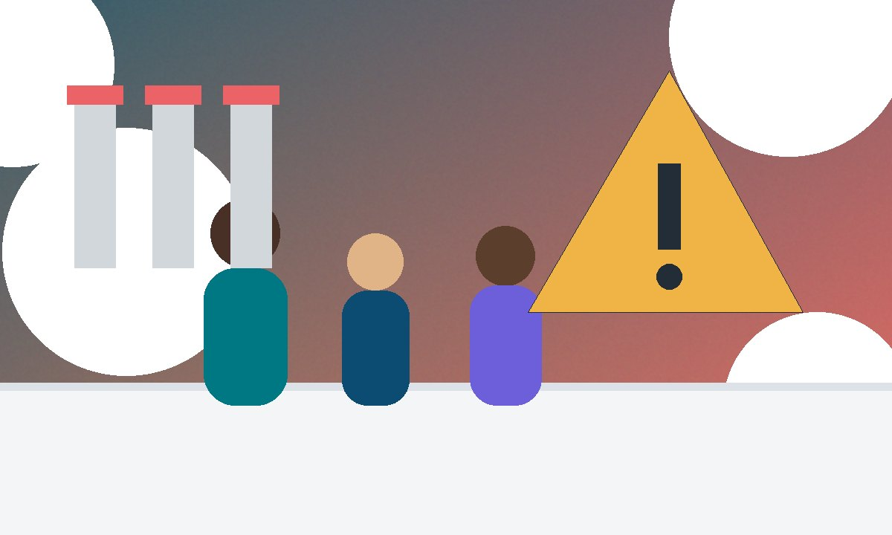
Identifier les comportements, les signaux faibles et les leviers managériaux qui permettent d’agir avant l’accident.
Lire le guide →
Définition, exemples, analyse et comportements à renforcer pour développer une vraie culture du signalement.
Lire le guide →EPI, pression terrain, signalement, procédures, presqu’accidents et culture sécurité collective.
Lire l’article →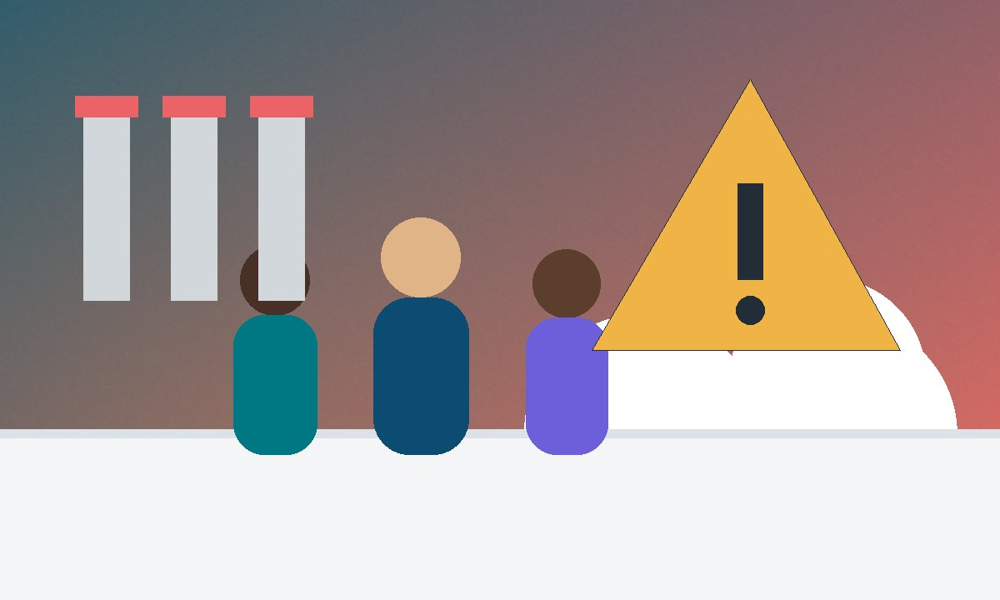
Le port des équipements de protection individuelle paraît évident dans les procédures. Sur le terrain, il se joue pourtant dans des situations très concrètes : intervention courte, gêne...
Lire le guide →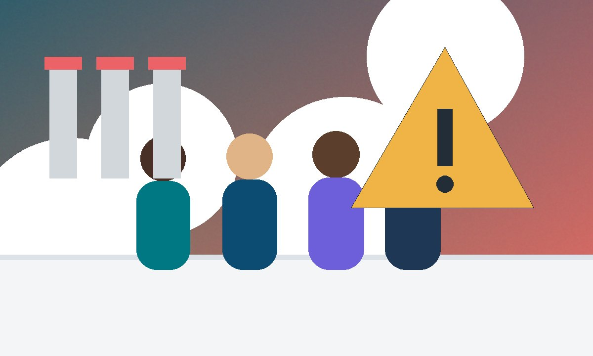
Le signalement d’une situation dangereuse est l’un des marqueurs les plus importants d’une culture de prévention. Il montre que les équipes ne se contentent pas de réagir aux accidents ...
Lire le guide →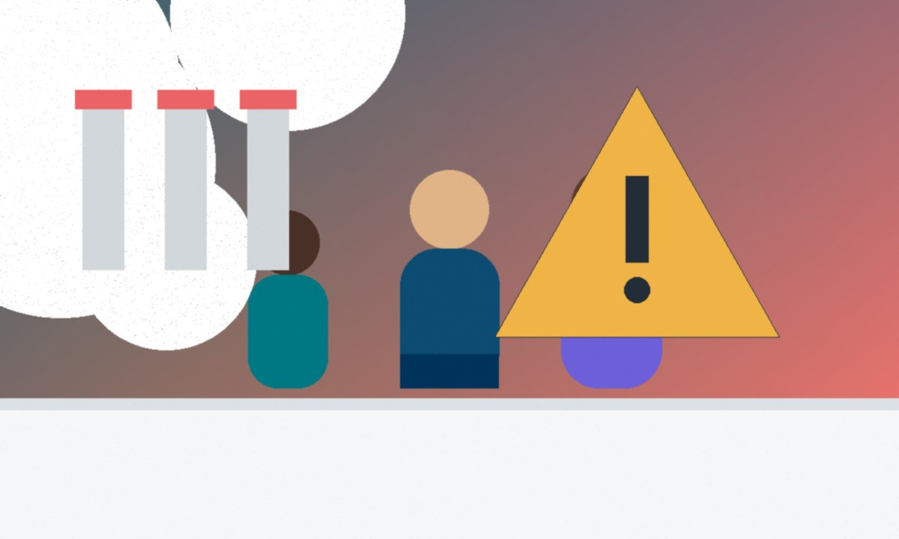
Les comportements de sécurité ne sont pas des slogans. Ils se manifestent dans des gestes quotidiens : vérifier, ralentir, signaler, demander de l’aide, refuser un raccourci, reprendre ...
Lire le guide →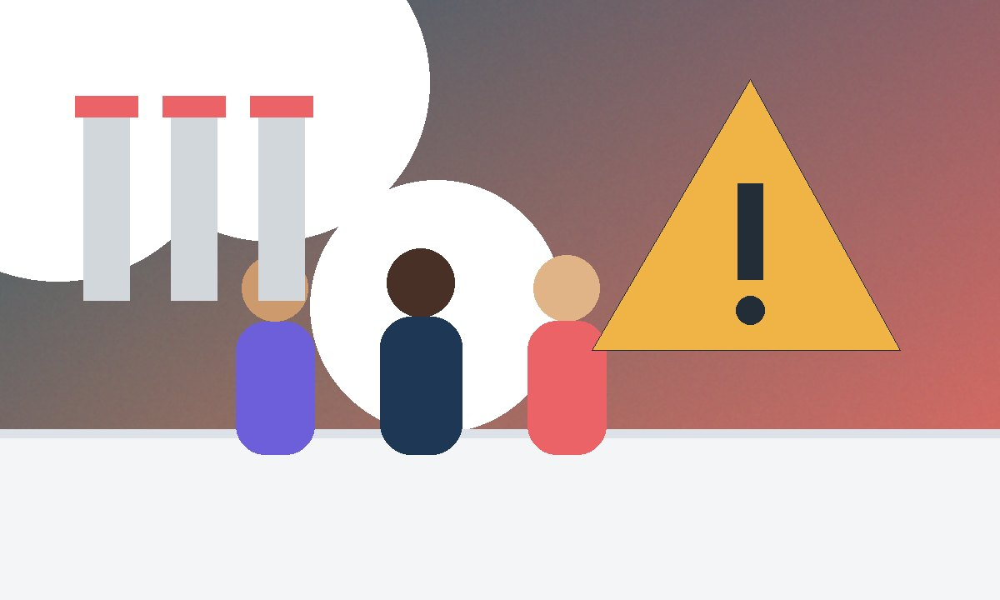
Le management de la sécurité ne consiste pas seulement à rappeler les règles. Il se joue dans les arbitrages quotidiens : ce que le manager tolère, ce qu’il valorise, ce qu’il interromp...
Lire le guide →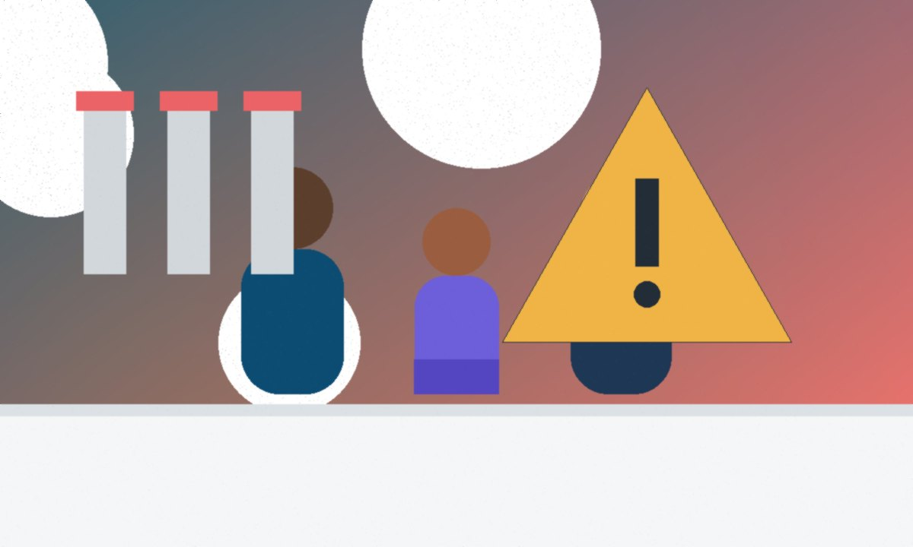
Une formation santé et sécurité efficace ne se limite pas à rappeler les obligations. Elle aide les participants à reconnaître les situations à risque, à arbitrer sous pression et à ado...
Lire le guide →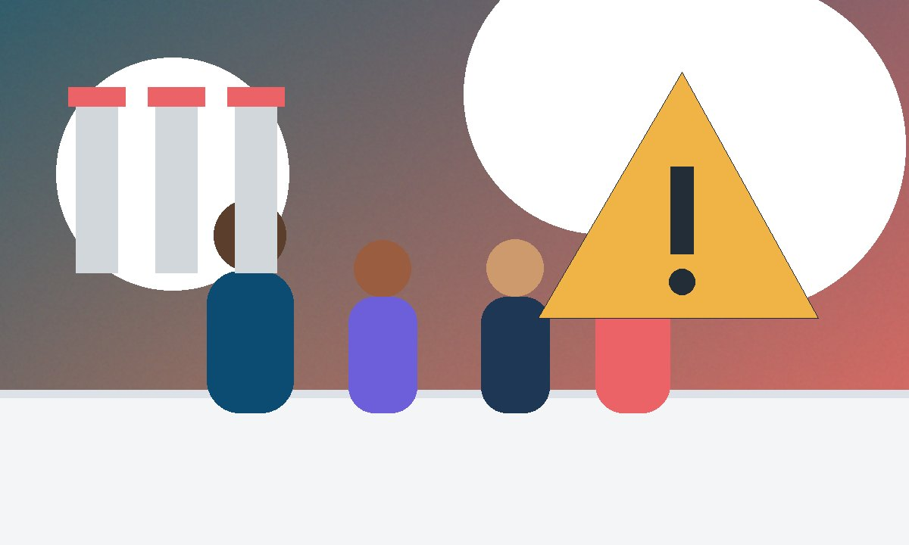
Le quart d’heure sécurité est un rituel court, souvent très utile, à condition de ne pas devenir une formalité. Sa valeur tient à sa capacité à faire parler du travail réel, des situati...
Lire le guide →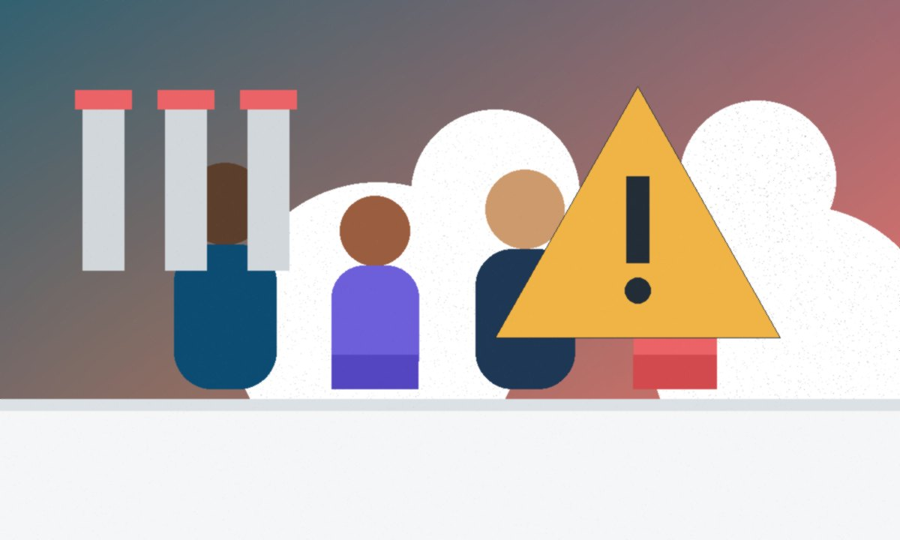
La culture juste, ou Just Culture, aide les organisations à traiter les erreurs, écarts et événements sécurité de manière équilibrée : comprendre les causes, distinguer l’erreur de la n...
Lire le guide →Les articles sont organisés pour aider chaque interlocuteur à comprendre comment utiliser un diagnostic comportemental dans son contexte : formation, prévention, transformation, conformité ou sensibilisation.
État des lieux, transformation culturelle, engagement collaborateurs et pilotage des pratiques.
Analyse des besoins, cas pratiques, débrief collectif et mesure d’impact pédagogique.
Cybersécurité, RSE, QVCT, éthique, sécurité terrain : passer des règles aux réflexes.
Enrichir une offre d’accompagnement avec un outil de diagnostic et de sensibilisation.
Après lecture des ressources, accédez à la bibliothèque pour choisir une base ou créer votre propre diagnostic comportemental.